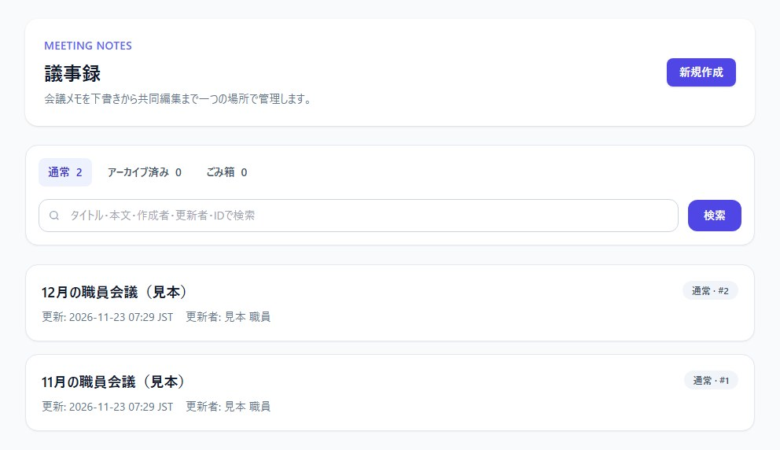
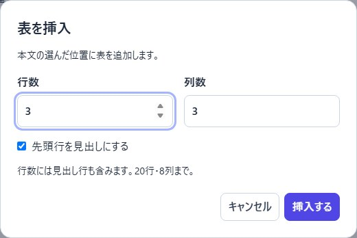
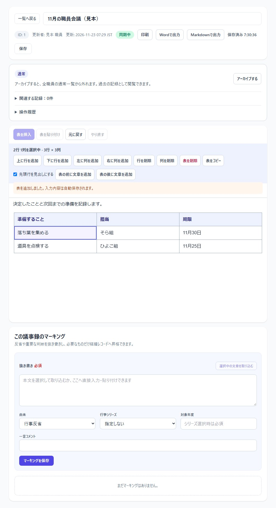
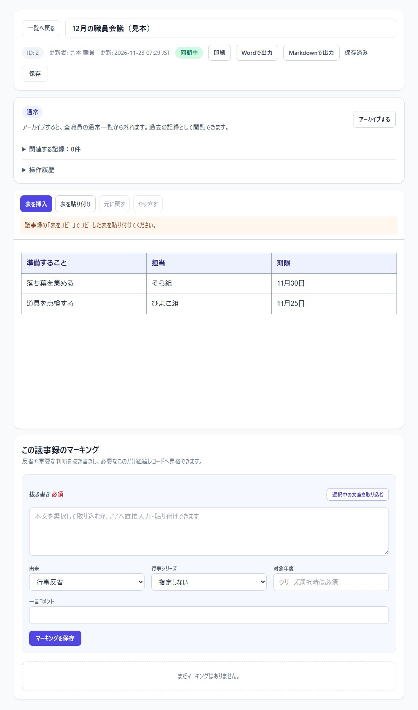
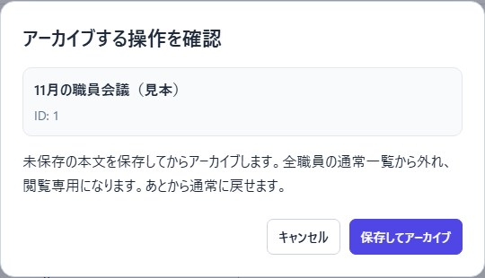
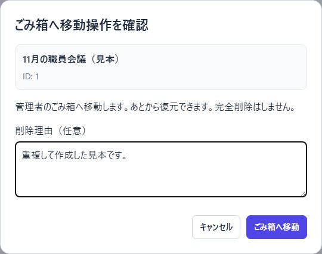

議事録に表を書く、アーカイブして保管する
編集できる職員は、議事録の本文や表を共同で編集できます。アーカイブで過去の記録を保管し、必要なときに通常の一覧へ戻します。
2026年11月23日に追加した手順です。画面は架空の職員・園児のデータで撮影しています。画像を押すと拡大できます。
1議事録を開く
職員メニューの「議事録」を開き、一覧から対象を選びます。新しく作る場合は「新規作成」を押し、タイトルと本文を書きます。
入力した本文・表は自動保存されます。移動する前に「保存済み」の表示を確かめます。閲覧だけの権限では編集や状態の変更はできません。

2表を挿入して入力する
本文の入れたい位置を選び、「表を挿入」を押します。行数・列数を入れ、先頭行を見出しにするか選んで「挿入する」を押します。行数には見出しも含み、20行・8列までです。「キャンセル」なら追加されません。
セルを押して入力します。Enterでセル内の改行、Tabで次のセルへ進みます。セルを選ぶと、上下の行追加・左右の列追加・行や列の削除・表全体の削除を選べます。
削除ではセルの文字も消えるため、確認画面で対象を確かめます。直後に戻す場合は「元に戻す」を使い、保存済みになったことを確認します。


3別の議事録へ表をコピーする
コピー元のセルを選んで「表をコピー」を押します。コピー先の議事録を開き、本文の入れたい位置を選んで「表を貼り付け」を押します。
貼り付けた表の内容を確認して「保存済み」を待ちます。コピー元の表は残り、貼り付け先は独立して編集できます。ExcelやWordなど別のアプリからの表の貼り付けは、この手順の対象外です。

4終わった議事録をアーカイブする
「アーカイブする」を押して、タイトルと関連する記録を確かめます。「保存してアーカイブ」を押すと、未保存の本文を保存したうえで全職員の通常一覧から外れます。「キャンセル」なら変更しません。
完了後はアーカイブ済みの一覧へ移動します。アーカイブ中は閲覧・出力ができ、本文・表は編集できません。修正する場合は対象を開き、「通常に戻す」を確認して実行します。

5不要な議事録は管理者がごみ箱へ移動する
管理者はアーカイブ済みの議事録を開き、「ごみ箱へ移動」を選びます。理由は任意です。関連する記録があるため移動できないと出た場合は、参照元としてアーカイブのまま保持します。
ごみ箱の記録は管理者だけが見られます。完全削除や自動削除は行いません。復元は「アーカイブ済みに戻す」を押します。編集を再開するには、さらに「通常に戻す」が必要です。

6保存や状態の変更がうまくいかないとき
保存失敗や他の職員の更新が表示されたら、確認せずに繰り返し確定せず、画面の案内に従って状態を再表示します。入力途中のマーキング・コメントなどがある場合は、それぞれを保存または取り消してからアーカイブします。
編集中に別の職員がアーカイブした場合、未保存の入力はその画面に保持されます。「未保存の入力を退避」で手元へ残すか、「通常に戻して編集を続ける」の案内に従って内容を確かめます。